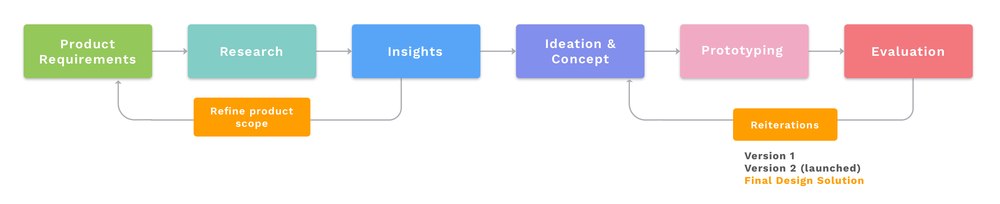
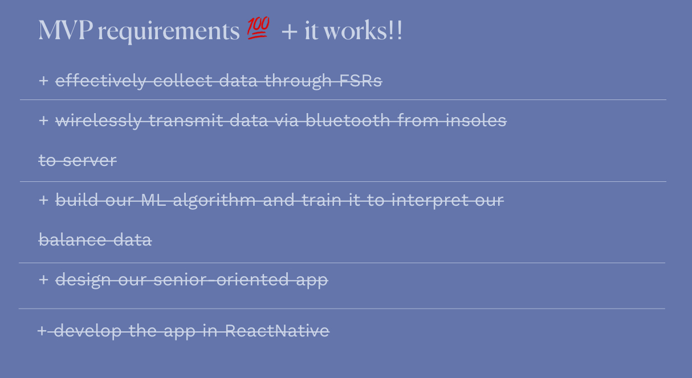

Mobile design, product design
Smart Soles is a smart wearable insole that dynamically tracks and helps to improve balance for aging individuals through sensors, machine learning and a senior-first companion app.
Team
Alana la Rue, Christopher Tong, Karen Hong, Ryan Vo, Pranav Arya and myself
Role
UX/UI Design, Research, Product Strategy
Duration
Sept 2019 - April 2020 (8 months)
Extras
View our product video. See our pitch deck.
Context
Did you know that in the United States, 1 senior dies every 19 minutes as a result of a fall? Key causes of falls include muscular deterioration, inactivity, and a lapse of accurate judgement. While other factors are also important in how balance is maintained (eg. sensory perception), we are focusing on improving physical health and consumer accessibility to personal health.
Smart Soles was born out of a tech venture incubator capstone program, after discovering that falls are a leading cause of injuries and deaths in seniors. As the product designer of the team, I touched on all aspects of the product from ideation to implementation for the hardware, software design and business components of the entire product cycle.
Overview
1) Problem
- Falls are one of the leading causes of senior deaths and injuries worldwide.
- There are little products catered to seniors in the form of personalized consumer health.
- Aging individuals often have inaccurate judgements about their balance.
2) Goal
- Design a product and app that allows seniors to track their balance dynamically over time, and suggests personalized exercises with live feedback.
- Increase local community interest and collaboration for our product launch.
3) Action
- Developed our working MVP with hardware that could collect balance data, and send it to our ML algorithms for interpretation.
- Coded our companion app using ReactNative, which allows for product launch in both iOS and Android.
4) Results
- Launched our working MVP for both the hardware and software!
- Won within top 35 at nwHacks 2020 (hackathon).
- Selected as the only Canadian team to compete at Hollomon Health Innovation Challenge 2020 in Seattle.
- Garnered positive attention amongst seniors and healthcare providers in Vancouver, BC.
For this case study, I will walk through our launched MVP and the process from ideation to deliverables. In addition, I will focus on the app design and how I would develop it beyond the scope of the MVP. Skip to final designs.
Design process
Product requirements
As this was an incubator program, our team were tasked with the challenge of creating a product for market launch that utilized all of our skill sets. This set the premise for a hardware and software integrated product, as we had engineers who could do both. We also had to ensure that what we were creating had market feasibility, and would be adopted by users who had a problem.
Research
Methods: interviews, surveys, observations, competitive analysis, industry research, academic review
What are people currently doing about the issue of senior falls? What are their concerns about about it?
My team and I conducted over 100+ interviews (~70 in person, ~30 in surveys) with users from this ecosystem, including: seniors, doctors, physiotherapists, adult children (30-50s years old) and grandchildren (<30 years old). Chatting with these individuals allowed us to see some repeated themes:
What are insights that we're not aware of?
- Of the ~50 seniors we spoke to, most of them are comfortable with technology and/or are comfortable seeking help to use them.
- Most of the senior fall prevention aids are reactive (eg. life alert once a fall has occured) and do not target the root causes of falls (eg. walking stick only temporarily helps the individual with balance).
- There is no follow-up or progress check method between each healthcare appointment.
- There are smart insoles that exist on the market, however - these are targeted towards performance level athletes and are unaffordable + inaccessible to the consumer market.
In addition, I also conducted a competitive analysis of the FitBit app, Apple Health app and Google Fit.
This helped me gain an understanding of the design features in consumer healthcare apps and how they provide value to the users. This, plus observations of seniors, helped me define the core features for our MVP.
To help guide the product vision, we created a persona of a senior, like Annie.
Ideation
Methods: wireframes, user flow, visual design
What are our core features?
Leveraging our user insights, we came up with the concept of Smart Soles. Smart Soles is a smart wearable insole that tracks balance through the use of Force Sensing Resistors, interprets the data through machine learning and gives personalized interpretations for progress and improvements in a senior-first app.
We chose an insole form factor because through our research, we found that seniors did not like wearing obvious wearables, and by using insoles - they can just set the device in their daily walking shoes and forget about it. We also wanted to integrate the opportunities from our research, such as using ML to help track, predict and recommend personalized interpretations for our users. Lastly, we observed that a huge gap between onboarding aging users to products was in its design, so we wanted to take a senior-first approach.
This led to initial sketches and wireframes.
Version 1
Methods: Building time!
With a pretty well-rounded concept, we decided to compete in nwHacks to build our hardware and software in under 24 hours.
This allowed us to test out our technical feasibility and create a prototype for user testing. It was also great to see how our team worked and how we were able to create a working model (collect data through sensors, ML algorithm, app?!)

I helped code the front-end in ReactNative following our initial UX/UI designs. The main purpose of this prototype was to ensure that the hardware could connect to our software, and that our algorithm was working.
Check out our demo!
Version 2 (launched)
Methods: Build some more + Hollomon Health Innovation Challenge
We quickly spotted what needed to be fixed, and split the team up to work on it.
I was tasked with improving the UX/UI design, and set out to do some user testing of the app we built. Feedback included: confusing copy, unclear symbols, and lack of visual cohesion. With this in mind, I set out to refine the second version.
Home page
Exercise page
User flow
Prototype of our launched product
Hollomon Challenge
Luckily, we were selected to compete at the Hollomon Health Innovation Challenge as the only Canadian team out of 21 other teams. We were able to present our working prototype and pitch to investors (even got on TV haha). For our second version, we developed the insoles to hold an imbedded form factor, enabled bluetooth connection between the hardware and software, refined our algorithm, and implemented the app design.
User testing
Unfortunately, this came right around the time of COVID-19 (literally our competition was in early March, and then lock down one week later...) so user testing with seniors or in-person was not a possibility. However, I am beyond proud of my team and our work because we were able to hit every single target goal for our MVP! Even beyond just the actual engineering, we also scoped out financial roadmaps and future plans for this product.
PS. mom, dad and friends if you would like to become an angel investor 🤑🙏 right now is a good time as we are pre-seed = good deal (just kidding)
Final designs
If you got this far and still want to read more, thank you! I'm going to expand on the product design if it were beyond the MVP launch.
Updating now!
Other projects
Redesigning for fake news.
Redesigning for fake news.
Redesigning for fake news.